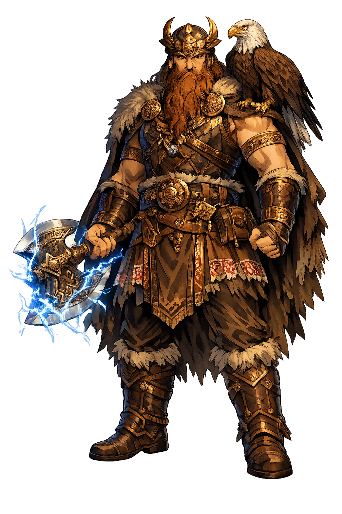

Stories of Perun
The stories of Perun survive mostly at second hand, through the chronicles of his enemies and the reconstructions of modern philologists. From them emerges a thunderer who is at once war-god and covenant-god: he hurls the bolt, he guards the sworn word, and he wages an eternal feud with Veles, lord of the underworld and the herd.
The Povest' vremennykh let ('Tale of Bygone Years') reports that Prince Vladimir, before his conversion, set up idols on a hill outside Kyiv: Perun of wood with a head of silver and a moustache of gold, flanked by Khors, Dazhbog, Stribog, Simargl, and Mokosh, and the people were commanded to sacrifice to them. In 988 the idols were beaten with sticks and thrown into the Dnieper, and the chronicler records that the people waded into the river weeping, 'for they had not yet been baptized, but were baptized in the name of Perun.' The detail is priceless: the Church's own founding history admits that Rus' wept for the thunderer as it left him. Conversion was not a serene enlightenment but a national funeral — and Perun was the body. The idol sank; the oath, as the treaty of 944 shows, floated for another half-century.
The text of Prince Igor's treaty with Byzantium, preserved in the Primary Chronicle (s.a. 6452/944), embeds the old oath formula verbatim. For the clauses of war and peace the Rus' swear by Perun — and by Volos, the cattle god, for everything touching livestock — and the curse on the perjurer is physical and total: may he be destroyed by his own weapons, unprotected by his own shield, slain by his own sword, shot by his own arrows. The same formula recurs in the treaty of 971, scaled down but recognizable. Here Perun functions exactly as Zeus Horkios does in Hesiod: not a god of stories but the installed enforcer of agreements between peoples. A thunderer who witnesses contracts is a thunderer whose violence has been socialized — order made audible.
Nearly a century after the baptism of Rus', the Primary Chronicle (s.a. 6579/1071) records a four-day uprising in Novgorod. Wandering volkhvy — sorcerers — declared that Perun had spoken: the powerful were hoarding grain while the common people starved, and the god demanded that the guilty be put to death. A crowd dragged officials through the streets, killed some, and threatened worse until the city governor's men cut down the ringleaders. The episode is one of the last organized flickers of resistance to Christianization, and it shows what Perun meant to those who invoked him: not a temple idol but a voice of communal justice, claimed by street prophets against the new Christian order. A god can be outlawed from every altar and still be quoted by the poor — that is what 'lord of oaths' means when the oath is broken from above.
The earliest written notice of the Slavic thunderer comes from Procopius of Caesarea, Wars 7.14 (c. 550): the Slavs 'consider that one god, the maker of lightning, is alone lord of all things, and they sacrifice to him cattle and all other victims; and they reverence also rivers and nymphs and all sorts of other beings.' Procopius does not give the god's name — but the identification with Perun, whose very name means 'striker', is the standard and near-certain reading, and the passage is regularly cited as the thunderer's baptism into history, six centuries before Kyiv's idols. It also sketches the whole divine household at once: a supreme bolt-hurler above, and beneath him the wet, local, numerous powers that Veles would later rule. The sixth-century sky already holds the shape of the tenth-century pantheon.
The central cycle of Slavic mythology survives in no manuscript; it was reconstructed by Vyacheslav Ivanov and Vladimir Toporov from the pairing of the gods in chronicle oaths, wedding laments, seasonal rites, and the comparative pattern of the Indo-European storm-combat. In their model, Veles — lord of the underworld, cattle, and wealth — commits a theft against the sky: Perun's cattle, his treasure, sometimes his bride. Perun pursues him down the tiers of the world-tree, hurling bolts; Veles transforms and wriggles — serpent, catfish, black eel — and each spring the thunderer strikes him down, and the rain returns to the herds. The scholars were explicit that they were reconstructing, and the honesty should be kept: this is a hypothesis, not an epic. But the pieces fit with unusual stubbornness, and no rival account explains the oath-pairing so economically.
Thunder
Perun is the thunderer of the Slavs: god of lightning, storm, and the sacred oak, patron of warriors and guarantor of oaths. His name means 'striker.' The East Slavic chronicles place him first among the gods of Kyiv, and folklore kept his axe, his fire, and his wrath alive long after the idols sank in the Dnieper.
His weapons are the thunderbolt and the throwing axe; lightning is his signature in every early description of the cult.
Oaks struck by lightning were his; a perpetual fire burned for him on open hilltop sanctuaries such as Peryn' near Novgorod.
The Rus'-Byzantine treaties swore by Perun and Volos; the perjurer's written curse was death by his own weapons.
In the reconstructed myth-cycle he pursues the cattle-thief Veles down through the tiers of the world-tree.
From the original script to the living URL
Perun
The name survives in scholarly transliteration. Perun is the standard Slavic romanisation, documented in academic sources — “Thunderer, striker”. Because the spelling uses only Latin letters, the form is the same in both ASCII and Unicode.
No indigenous writing system is securely attested for individual slavic names. The form shown is a modern scholarly transliteration.
perun
The plain perun form is identical to the Unicode restoration. Because this name is already written in Latin letters, no diacritics, stress, or script information were lost — only capitalization differs.
Perun
The Unicode restoration does not need to recover lost marks for Perun. Its value is canonical spelling and consistent cataloguing, not the reconstruction of erased orthography. The domain is readable as-is to both DNS and humanity.
Perun.com
This restoration is written entirely in ASCII letters — no Punycode encoding stands between Perun and the DNS. The domain reads identically to machines and to human eyes.
Owned, ideal, and ASCII forms of Perun
Perun
The full Unicode restoration. perun.com is not in the PuniCodex collection — it is watched for release; if it drops, this temple upgrades to an owned flagship.
How Perun was spoken
How Perun is preserved in writing
No indigenous writing system is securely attested for individual slavic names. The form shown is a modern scholarly transliteration.
Contribute scholarly provenance →Perun is the god of the strike — the moment when the sky asserts itself against the earth and the forest smells of split wood. Everything about him is vertical: the bolt falls, the oak points up, the oath rises to the witness who will enforce it. He is violent, but his violence is legal: he does not rage, he executes. That is why treaties trusted him and why rebels in 1071 invoked him against hoarding governors; he is the enforcer of an order older than any prince. To study Perun is to watch a society argue with its own thunder. The chroniclers beat his idol with sticks and threw it in the river, then preserved his name more carefully than any priest had — in oath-texts, in curses, in the weeping of the baptized. A god whose worshippers cry when he leaves has not been defeated; he has been internalized. Perun endures as the sound above the roof that still makes everyone, believer or not, look up.
Enter Extended Lore